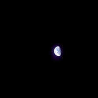
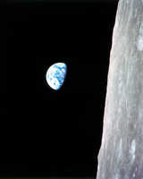
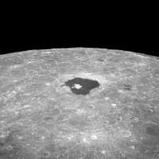
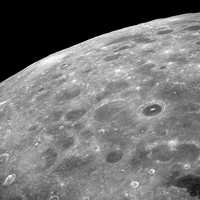

12/24/1968SearchEarth from Apollo 8: This is how the Earth looked as photographed from a point near the Moon by the Apollo 8 astronauts. The Earth fills less than one percent of the frame exposed through 80mm lens. North is approximately vertical. Kinda lonely, isn't it? (NASA on The Commons)Earthrise - Apollo 8: This view of the rising Earth greeted the Apollo 8 astronauts on December 24, 1968 as they came from behind the Moon after the fourth nearside orbit. The photo is displayed here in its original orientation, though it is more commonly viewed with the lunar surface at the bottom of the photo. Earth is about five degrees left of the horizon in the photo. The unnamed surface features on the left are near the eastern limb of the Moon as viewed from Earth. The lunar horizon is approximately 780 kilometers from the spacecraft. Height of the photographed area at the lunar horizon is about 175 kilometers.Apollo 8: This is a view of the large crater Tsiolkovsky as photographed by the astronauts during the Apollo 8 lunar orbit mission, looking East toward the lunar horizon. Tsiolkovsky is approximately 150 statute miles in diameter. It was first identified and named by the Russians from photographs taken by their unmanned Luna III spacecraftThe Lunar Farside: View of the lunar surface taken from the Apollo 8 spacecraft looking southward from high altitude across the Southern Sea. The bright-rayed crater near the horizon is located near 130 degrees east longitude and 70 degrees south latitude. The dark floored crater near the middle of the right side of the photograph is about 70 kilometers (45 statute miles) in diameter. Both features are beyond the eastern limb of the Moon as viewed from earth; neither has a name.